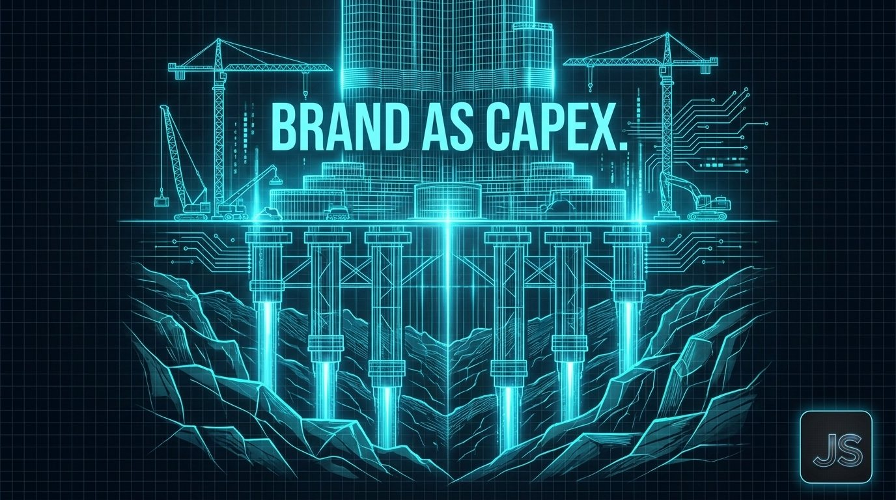
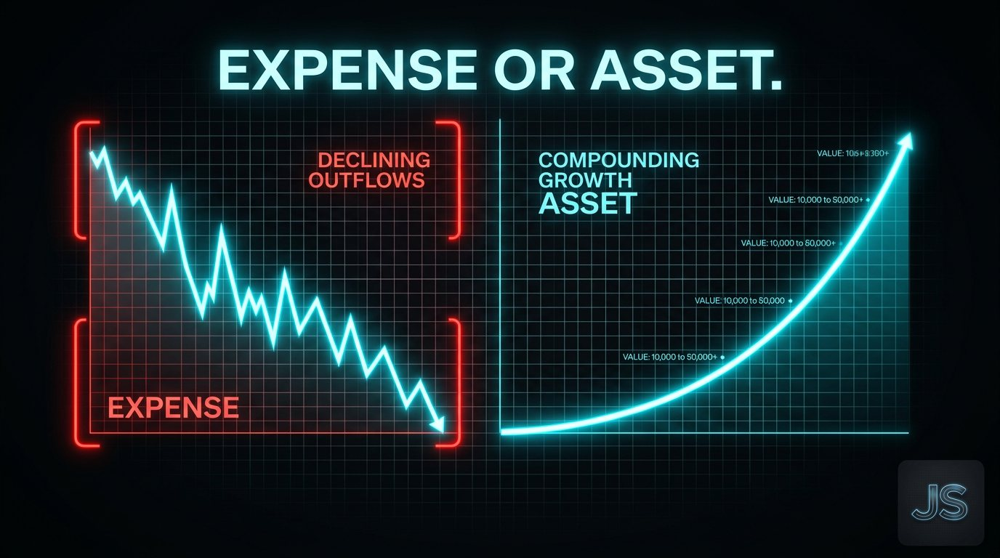

The Creative Shift August 12, 2026
Brand as CapEx
Stop calling it brand budget. Call it Brand CapEx.

Every quarter, the same fight.
Marketing defends the brand budget. Finance cuts it anyway.
Not because finance is wrong. Because the ledger is.
The accounting problem nobody names
Brand behaves like a long-horizon asset. It compounds. It creates pricing power. It shortens sales cycles. It shows up in the deals that close faster and the ones that close at all.
But GAAP forces it through the P&L as expense.
So every budget cycle, the highest-compounding investment in the company gets treated like office supplies.
The CFO isn't the villain here. The system is doing exactly what it was designed to do. Match expense to period. Protect against overstating asset value.
The system was built for factories. You're running a brand.

The frame that changes the conversation
Stop calling it brand budget.
Call it Brand CapEx.
Capital expenditure. Money spent building a long-duration asset that generates returns for years. That's what brand actually is. A CFO understands CapEx. A CFO respects CapEx. A CFO fights for CapEx when the board comes for it.
You're not asking for more marketing spend. You're proposing a capital allocation into a compounding asset with measurable leading indicators.
The words change everything about who's in the room.
What compounds, what doesn't
Not every brand dollar is CapEx. Some is genuinely operating expense. Knowing the difference is the whole game.
CapEx: distinctive brand assets, category positioning, thought leadership that builds authority over time, share of voice in the moments buyers form preference.
OpEx: promotional spend tied to a single quarter, campaign production for one launch, tactical media that expires with the flight dates.
Most marketing departments blend the two, report it as one line, and lose the CapEx fight every cycle because it looks like OpEx.
The leading indicators that make it real
CFOs don't fund vibes. They fund assets with measurable value trajectories.
Share of search. Branded search volume. Direct traffic trend. Percentage of deals where the buyer named the brand before sales contact. Unaided recall in category studies.
These are the leading indicators of pricing power and pipeline. They compound. They can be tracked quarter over quarter. They give finance the asset accounting they were missing.
You're not defending a cost. You're reporting on an asset.
The strategic implication
Companies that reframe brand as CapEx don't just win the budget fight. They win the room. Marketing stops being the department finance tolerates and becomes the department finance partners with.
The reframe isn't a trick. It's an accurate description of what brand actually does inside a business. The ledger has been wrong about it for fifty years.
Fixing that starts with the words leadership uses in the meeting where the money moves.
One for the road
The next time you sit down with your CFO, don't ask to defend the brand budget.
Ask to reclassify it.
Want this kind of thinking on your brand?
The Creative Shift is the thinking behind the client work. If you lead a brand and want this on your side of the table, let’s talk.